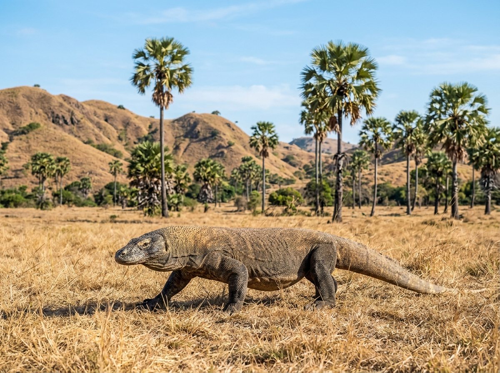
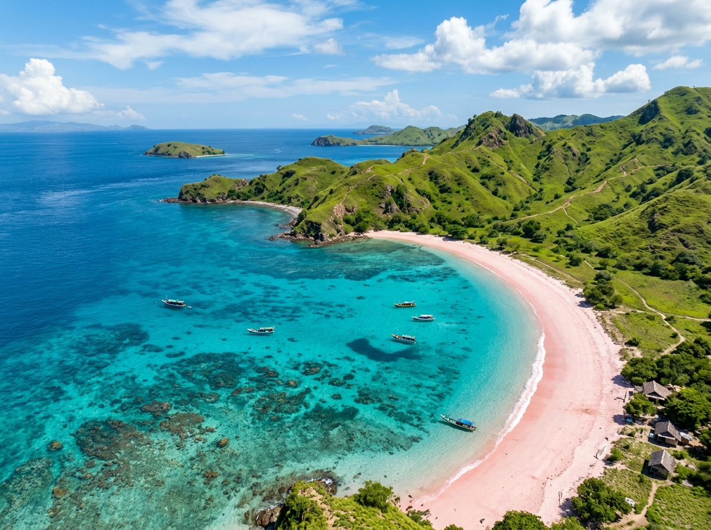
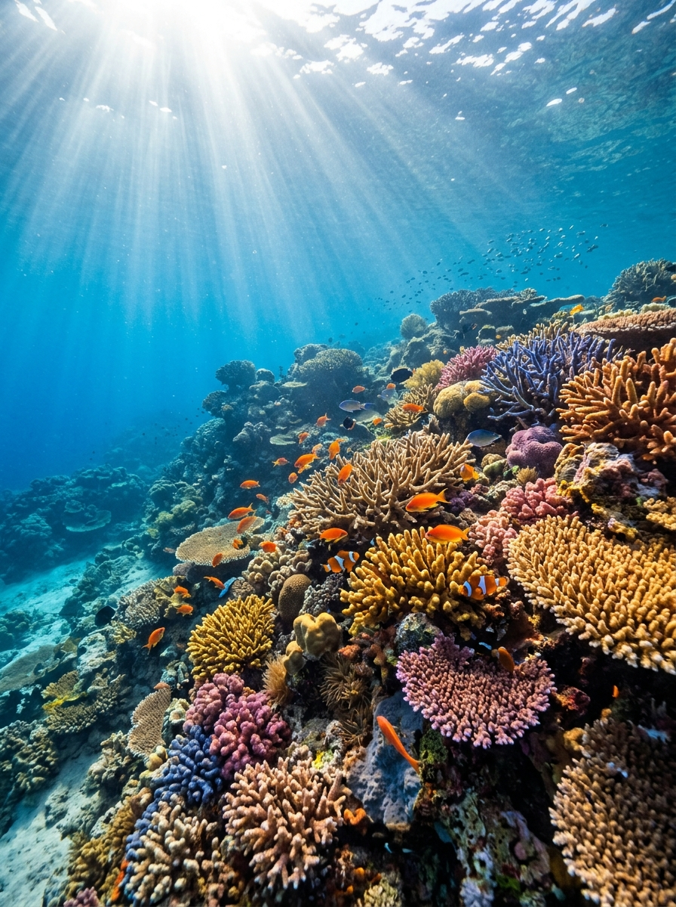

BUKIT & PANORAMA
Menyambut pagi di Padar
Susuri anak tangga menuju puncak. Tiga teluk, bukit berlapis, dan cahaya pertama menjadi hadiah terbaiknya.
MENGENAL LABUAN BAJO
Di ujung barat Flores, perjalanan terasa lebih pelan. Kapal-kapal berlayar di antara pulau, bukit savana bertemu teluk biru, dan komodo hidup di habitat alaminya. Labuan Bajo mengajakmu menukar hiruk-pikuk dengan cerita yang tak terlupakan.
WAKTU TERBAIK
April–Oktober
Langit cerah, laut lebih bersahabat
DURASI IDEAL
4–5 hari
Cukup waktu untuk darat dan laut
RITME PERJALANAN
Alam & petualangan
Jelajah pulau, trekking, snorkeling
SUHU RATA-RATA
27–30°C
Hangat tropis sepanjang tahun
YANG MEMBUATMU JATUH HATI
BUKIT & PANORAMA
Susuri anak tangga menuju puncak. Tiga teluk, bukit berlapis, dan cahaya pertama menjadi hadiah terbaiknya.

SATWA & KONSERVASI
Amati komodo di alam liar bersama ranger. Pengalaman langka yang mengingatkan kita untuk menjaga rumah mereka.

PANTAI & BAWAH LAUT
Pasir bersemu merah muda, air sebening kaca, dan terumbu penuh warna. Luangkan waktu untuk menikmati semuanya.
SEBELUM BERANGKAT
Sedikit persiapan memberi lebih banyak ruang untuk menikmati perjalanan.
Terbang ke Bandara Komodo (LBJ) dari Jakarta, Bali, atau kota penghubung lain. Pusat kota berjarak sekitar 15–20 menit berkendara.
Pilih tur kapal sehari atau menginap di kapal selama 2–3 hari. Gunakan operator berizin dan pastikan perlengkapan keselamatan tersedia.
Pisahkan biaya penginapan, kapal, makan, dan tiket kawasan. Tarif taman nasional serta aktivitas dapat berbeda; konfirmasi sebelum berangkat.
Sepatu trekking, topi, tabir surya, botol isi ulang, dan tas kedap air. Bawa uang tunai secukupnya untuk kebutuhan di pulau.
POTRET DARI TIMUR
Rumah sementara di atas laut
Kapal pinisi, perairan Komodo

Dunia di bawah permukaan
Terumbu karang, Taman Nasional Komodo
Senja yang ingin diulang
Pesisir Labuan Bajo, Flores
CERITA BERIKUTNYA MILIKMU
Mulai dari tanggal, pilih pengalaman, lalu sisakan ruang untuk kejutan. Perjalanan yang berkesan dimulai dengan satu langkah kecil.
BAYANGKAN 4 HARI DI SINI
ULASAN PELANCONG
“Matahari terbit di puncak Padar benar-benar sepadan dengan pendakiannya. Berlayar dengan pinisi membuat perjalanan terasa tenang dan tak terburu-buru.”
“Pantai Pink jauh lebih jernih dari foto. Ranger di Pulau Komodo juga sangat informatif menjaga jarak aman dan kelestarian satwa.”
“Cuaca cerah di bulan Agustus sangat bersahabat untuk snorkeling. Jangan lupa bawa topi dan botol minum sendiri karena terik di siang hari.”
PERENCANAAN SINGKAT
KOLEKSI PRIBADI
JELAJAH NUSANTARA
BAGIKAN PENGALAMANMU